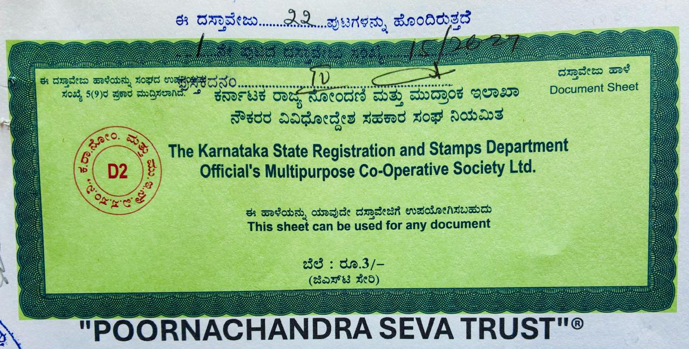

ಸೇವೆ · ಸಮರ್ಪಣೆ · ಸ್ಪೂರ್ತಿ
A charitable trust dedicated to education, healthcare, livelihood and welfare — serving the communities of Ramanagara District and beyond. ಮಾನವ ಸೇವೆಯೇ ಮಾಧವ ಸೇವೆ.
No.157, Shravanaiahna Thopu, Virupakshipura Hobli, Channapatna Taluk, Ramanagara District, Karnataka 562138
Registered with Karnataka State Registration & Stamps Dept.
About the Trust · ಟ್ರಸ್ಟ್ ಬಗ್ಗೆ
Poornachandra Seva Trust is a registered charitable organisation based in Channapatna, Ramanagara District, Karnataka. Founded by Smt. Chandrika N and Shri Srinivasa D, the trust was created to serve the most vulnerable — through education, medical aid, livelihood support and social welfare.
ಪೂರ್ಣಚಂದ್ರ ಸೇವಾ ಟ್ರಸ್ಟ್ ಕರ್ನಾಟಕದ ರಾಮನಗರ ಜಿಲ್ಲೆಯ ಚನ್ನಪಟ್ಟಣ ತಾಲ್ಲೂಕಿನಲ್ಲಿ ನೋಂದಾಯಿತ ಸಂಸ್ಥೆ. ಶಿಕ್ಷಣ, ಆರೋಗ್ಯ ಮತ್ತು ಸಮಾಜ ಕಲ್ಯಾಣ ಕ್ಷೇತ್ರದಲ್ಲಿ ನಿಸ್ವಾರ್ಥ ಸೇವೆ ಸಲ್ಲಿಸುತ್ತಿದೆ.
Carry out educational, medical, general public utility and welfare objectives for the relief of the poor and dissemination of knowledge.
A self-reliant Karnataka where every person — regardless of age or background — can read, access healthcare and lead a dignified life.
Recognised by Rotary International District 3192 for successfully executing the Adult Literacy Project (2024–25).
What We Do · ನಾವು ಮಾಡುವ ಕೆಲಸ
250 adult illiterates taught Kannada reading, writing and arithmetic across 10 centers in Anekal Taluk in partnership with Rotary International District 3192.
Free distribution of textbooks and school supplies to underprivileged students in Ellekeri village, ensuring no child is left behind for lack of resources.
Active participation and support in FEVORD-K (Federation of Voluntary Organisations for Rural Development – Karnataka) meetings and rural welfare activities.
Compassionate care and support for elderly and destitute individuals — providing companionship, essentials and dignity to those who need it most.
General public utility and medical relief programs targeting poor and marginalised communities as outlined in the trust's foundational objectives.
Dissemination of knowledge, relief programs and development initiatives for the upliftment of marginalised families across Ramanagara and surrounding districts.
Gallery · ಫೋಟೋ ಗ್ಯಾಲರಿ
Real moments from the ground — ಕ್ಷಣಗಳ ಮೂಲಕ ಕಾರ್ಯ ನೋಡಿ.
Official Documents · ಅಧಿಕೃತ ದಾಖಲೆಗಳು
Poornachandra Seva Trust is a legally registered charitable organisation under the Karnataka State Registration and Stamps Department.

Official amendment listing founder trustees — Chandrika N, Srinivasa D, A Mukunda, Krishnegowda and Punith B J.
Our People · ನಮ್ಮ ತಂಡ
Dedicated trustees and volunteers committed to transparent, ground-level service.
W/o Srinivasa D. Led the Adult Literacy Project with Rotary International. Founding trustee and primary leader of all programs.
S/o Late Dodda Marivenkataiah. Co-founder and secretary, based in Channapatna Taluk, Ramanagara District.
S/o N Anjaneya. Based in Tumkur District. Brings local knowledge and field experience to trust operations.
S/o Chowdegowda. Based in Mandya District — extends the trust's reach across multiple districts.
S/o Jayakumar B S. Based in Bengaluru North. Brings urban outreach and coordination capabilities.
Support the Mission · ನಮ್ಮನ್ನು ಬೆಂಬಲಿಸಿ
Every rupee you contribute directly funds our programs — from adult literacy centers to elder care. ನಿಮ್ಮ ಸಹಾಯ ಅಮೂಲ್ಯ.
Send directly to our registered number
Open PhonePe, GPay or any UPI app → Pay to this number
State Bank of India, Channapatna
Registered NGO · Reg. No: CAN-4-00053-2023-24 · ದಾನ ರಸೀದಿ ಲಭ್ಯ
After transferring, WhatsApp us at 94823 64863 for your donation receipt.
Get in Touch · ಸಂಪರ್ಕಿಸಿ
Reach out to volunteer, donate, partner or simply know more. ನಿಮ್ಮ ಸ್ಪಂದನಕ್ಕಾಗಿ ನಾವು ಕಾದಿದ್ದೇವೆ.
No. 157, Shravanaiahna Thopu, Virupakshipura Hobli,
Channapatna Taluk, Ramanagara District, Karnataka – 562138
CAN-4-00053-2023-24
Karnataka State Reg. & Stamps Dept.